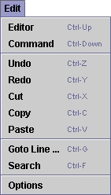
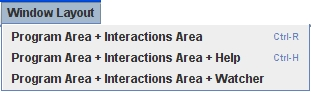

Click on the image below to learn about the different areas of the JES interface.

Command Area
Use the command area to type commands that you'd like JES to carry out right away. You'll notice that there are three "greater than" symbols in the command area. This is called the primary prompt. It simply means that JES is ready for a new command.
An example of a command:
>>> print 5+7
12
You will also use the command area to call the programs that you write in JES. For example, if you have written a program called MyProgram() and loaded it, you might call it using the command line like this:
>>> MyProgram()
Edit Menu
Use
the edit menu to carry out the basic text editing commands that you are
probably familiar with from using word processors and other applications.
These commands include Cut, Copy, Paste, Undo, and Redo.
The Options menu item opens a dialog box in which you can set the font size and the mode in which you would like to work. Changing modes simply changes the kind of error messages that JES displays when it finds a programming problem. The "normal" mode is the default mode. In this mode, error messages are very simple. In "advanced" mode, error messages are more detailed. Until you feel that you are ready to interpret detailed error messages, you should not change the mode. You also have the options to turn on/off the line numbers and block boxes.
The Editor and Command menu items allow you to move between the Program Area and Command Area. The keyboard shortcuts are very useful.

Use the file menu to create New files, Open existing files, Print or Save the file on which you are currently working, or Save As to specify a file name for your current file.
For more about the Load option, see the section on Load Button.
You can also exit JES from this menu.

Look here for information about carrying out basic tasks in JES and creating media computation programs in Jython.
Load Button
Use the load button to load the file that is currently in the program
area so it can be recognized in the command area. When you write or open
a program in the program area, you must load it before you can call it
from the command area. If you forget to load your program, JES either
will not recognize your program's name, or will call the last version
of your program that was loaded, without any changes you might have made
since then.
Hint: Before you can load a program, you must save it!
Program Area
Use the program area to write and/or edit your programs. Entering commands
in this area does not cause JES to carry them out right away; instead,
you can type sequences of commands that you'd like JES to carry out in
a specific order and give those sequences names. Then you can load the
file and call your programs by name from the command line to see what
they do.
As you probably know already, JES is used to write programs in the Jython programming language. For more information about writing programs, see Programming in Jython.
Status Bar
Use the left side of the status bar to determine the line number and position
of your cursor in the program window. This can be very useful information
when you are testing your programs. Often, error messages will include
the line number and/or position of what JES believes is the error in your
code. As you will discover, JES is not always right about which line contains
the error, but it will give you a good place to start looking.
You should also include line number/position information if you are sending a question about your code to TAs or classmates so they can quickly identify the segment to which you are referring.
Explain Button
If your cursor is sitting over the name of a recognized JES function, this
button will say "Explain [that function]." Clicking this button
will open up the Help Area and display information on that function.
Stop Button
Use the Stop button any time you want JES to stop what it is doing. You
may start loading a file, only to realize that you still have changes
to make, or you may feel that it is taking too long to load. In either
of these cases, simply click on the Stop button.
You can also use the Stop button to stop a program that has been called from the command area. This may be useful if the program you have opened, loaded, and called from the command window is taking a long time. You should try to keep media file sizes to a reasonable size, but sometimes it will take several minutes to run a program that you have written so the Stop button can be useful if you decide you'd rather run a long program at a later time.
One of the hardest things to do when you're programming is debugging. To make this easier, JES includes a debugger for you to use. To turn it on, simply press the Watcher button, or choose Program Area + Interactions Area + Watcher from the Window Layout Menu.
See the help section on The Debugger for more information.

This menu allows you to access the Sound Tool, Picture Tool, and Movie Tool. To open them, simply click the appropriate menu item, and JES will prompt you to select a sound, picture, or movie to open in the tools.
See the help section on MediaTools for more information.

This menu provides a list of methods available in JES. To make them easier to find (and to keep the list from getting to big), the list has been divided into Colors, Files, Input/Output, Turtles, Movies, Pixels, Pictures, and Sound. Selecting a function from this list will immediately drop it in the Program Area wherever your cursor is. Also, the information for this function will appear in the Help area.

JES has two windows which you can choose to open on the side of the Program Area: the Watcher and the Help Area. This menu lets you choose between having one of those open and having neither open.

The running indicator is a bar that moves back and forth when JES is working on something. It will show when you are running a program, picking a file, or giving commands in the Command Area.